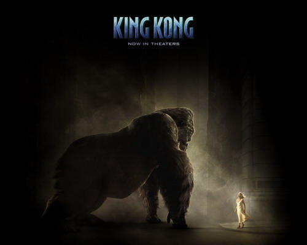

单纯的金刚,简单爱 @ Jan 23, 2006

看完《KING KONG》...无尽伤感...
金刚对美丽的安那份简单的爱，令人伤感。人类社会的复杂，人性的丑恶，我们这些自以为是的可怜的动物，最终都被社会同化。饰演Ann Darrow的Naomi Watts和饰演Jack Driscoll的Adrien Brody都是因为他们的眼神及面孔上的表情而格外喜欢上的。电影结束后的两个小时里依然忘不了金刚的眼神，难忘金刚和安短暂的快乐。伟大的爱情都是悲剧式的结尾，但这个结局是不是可以更改呢？如果回到人类社会的安开始就抱着救助金刚的打算，说服周围的人们去相信金刚不会伤害人类，是善良的，或者借助媒体力量去宣传一下，对于金刚给其一些安抚。电影没有结束前我在想金刚是不是被送回了骷髅岛？这个结局算是完满的吧！电影前段一直到中段看得我叽哩哇啦乱叫，后面是淅沥哗啦的流泪，走出电影院后背上都是汗。有人觉得三个小时有些长，我倒觉得这三小时不知不觉就过去了。
爱，永远都会找到共鸣......简单和复杂在一起和谐？还是简单和简单更美妙？简单更容易让人快乐，但却容易被复杂误解和伤害。
ELLE》2006年二月号上有篇文章写到：成功的爱情就是在一起后，两个人都会变得更好。而“好”的标准，只在你自己心里，也许是微妙的幸福感，也许是汹涌的创作欲，也许是名利兼收，也许是痛苦后的蜕变，也可能是，象我们所采访的年轻艺术家彭扬军所说的那样：“我本来从不抬头看天，但和她在一起后，我经常发现原来蓝天这样美好。”
世界本来就没有给爱附加任何的外在条件，追随自己的心而活的确比较艰难，但能被简单的男人爱着，何尝不是一种幸福！
5 Responses to “单纯的金刚,简单爱”
2006-01-24
非常同意。在这里潜水很久。今天浮出水面冒个泡泡。
曾经有位南京的哥哥，让我觉得自己变好了。那种荡漾于心的微妙幸福感，容光焕发的神采。。。
只可惜，一切皆是云烟。
2006-01-24
简单一些，快乐多点！
2006-01-24
爱与痛皆于心，能够简单就是最大的幸福；何尝不期待:sad:
2006-01-27
人世间，爱本身就不是一件简单的事情，说要爱得简单的人恐怕没有真正地爱过......
在得到真爱，回归简单爱之前，要承受很多痛苦并付出很多努力......
没有经历痛苦就爱着和被爱着的人太幸运了，这样的人可惜太少了......
2006-02-06
剧情一般般，效果做的不错，男女主角长的很好看。
有些地方蛮煽情的，但没觉得多感人嘛。
我看了一部法国故事片，倒是被很深的感动了。
Leave A Reply
存档只读，评论已关闭。